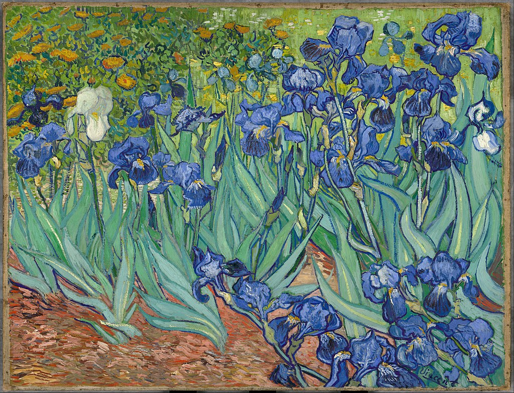

<head>
<meta charset="UTF-8" />
<meta name="keywords" content="drawing, painting" />
<meta name="description" content="drawings by Sunjy" />
<title>Sunjy</title>
<link rel="shortcut icon" type="image/x-icon" href="../../mImages/mCommon/favicon.ico" media="screen" />
<link rel="stylesheet" type="text/css" href="../../mCsses/mCommon/mCssA.css" />
<link rel="stylesheet" type="text/css" href="../../mCsses/mCommon/mCssB.css" />
<link rel="stylesheet" type="text/css" href="../../mCsses/mCommon/mCssC.css" />
<link rel="stylesheet" type="text/css" href="../../mCsses/mCommon/mCssD.css" />
<link rel="stylesheet" type="text/css" href="../../mCsses/mContent/mCssA.css" />
<link rel="stylesheet" type="text/css" href="../../mCsses/mContent/mCssB.css" />
<link rel="stylesheet" type="text/css" href="../../mCsses/mContent/mCssC.css" />
<link rel="stylesheet" type="text/css" href="../../mCsses/mContent/mCssD.css" />
</head>
<script type="text/javascript" src="../../mScripts/mContent/mContentAA.js" /></script>
<script type="text/javascript" src="../../mScripts/mContent/mContentAB.js" /></script>
<script type="text/javascript" src="../../mScripts/mContent/mContentAC.js" /></script>
<script type="text/javascript" src="../../mScripts/mContent/mContentAD.js" /></script>
<script type="text/javascript"></script> 
<script type="text/javascript">
document.write('<div class="mImgAbsolute"></div>');
/*
document.write('<p class="mFontSizeBColor" />From a white paper...</p>');
document.write('<table class="center"><tr><td>');
document.write('');
document.write('</td></tr></table>');
*/
</script>


<script type="text/javascript">
document.write('<p class="mFontSizeBColor" />Irises</p>');
document.write('<p class="mFontSizeSColor" />By Vincent van Gogh. “Irises” is one of several paintings of ‘Irises’ by Vincent van Gogh and one of a series of paintings he painted at the asylum in Saint-Rémy, France, in the last year before his death.<br><br>In 1889 after several episodes of self-mutilation and hospitalization, Van Gogh chose to enter an asylum. There, in the last year before his death, he created over 120 paintings.<br><br>Shortly after entering the asylum, Van Gogh started Irises, working from nature in the asylum’s garden.<br><br>He called painting “the lightning conductor for my illness” because he felt that he could keep himself from going insane by continuing to paint.<br><br>Each one of the irises is unique, for he studied their movements and shapes to create a variety of curved silhouettes.</p>');
document.write('<table class="center" /><tr><td>');
document.write('<br>In 1889 after several episodes of self-mutilation and hospitalization, Van Gogh chose to enter an asylum. There, in the last year before his death, he created over 120 paintings.<br><br>Shortly after entering the asylum, Van Gogh started Irises, working from nature in the asylum’s garden.<br><br>He called painting “the lightning conductor for my illness” because he felt that he could keep himself from going insane by continuing to paint.<br><br>Each one of the irises is unique, for he studied their movements and shapes to create a variety of curved silhouettes." />');
document.write('</td></tr></table>');
</script>


